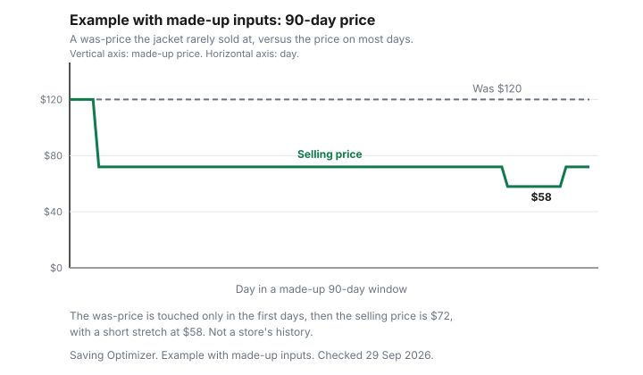

Clothing · Canada
Price Tracking for Clothing in Canada: Alerts, Wishlists and Fake 'Was' Prices
A clothing “was” price is a claim about the past. It is either a price the seller, or sellers in that market, actually sold or offered in good faith, or it is a number that makes today’s tag look kind. You cannot see the difference from one visit. You can see it from a short record: the same jacket, the same page, enough days to notice whether the crossed-out price ever stuck. This guide is that routine, using the Competition Bureau’s ordinary-price tests as the standard. It does not rank trackers, and it does not name a browser extension. A cash-back portal, if you use one, is an offer type. It does not validate a was-price.
Disclosure: Cash-back portal offers are an offer type. Saving Optimizer may earn a commission if a partner link is added later. No portal partnership is claimed. A portal does not decide whether a was-price is genuine. Education only. This is not legal advice.
Key takeaways
- Track the price you could pay, the date, and the crossed-out price. A wishlist alert is useful when the retailer offers one. A screenshot still works when it does not.
- The Competition Bureau’s 16 October 2009 guidelines, page marked under review, use two tests. Volume: more than 50 percent of sales at or above the reference price, generally over twelve months. Time: offered in good faith for more than 50 percent of a period that is generally six months. The plain-language page says the period is usually within a year.
- “Was,” “regular” and “after sale” claims are judged by those tests. A clearance can still be fair if it is labelled as clearance and the original price was offered in good faith.
- The chart is an example with made-up inputs: a jacket whose “was” price of $120 appears on only a few days, while $72 is the price on the other days drawn. It is not a store’s history.
- Off-price compare-at tags are a scepticism problem. The Winners and Marshalls guide is that conversation. This page is the ordinary-price test.
Retailer wishlists and back-in-stock alerts
Start with the tool the store already runs. A wishlist, a saved item, or a back-in-stock note records that you wanted a size, and some banners email you when the price or the stock changes. The email is a prompt, not evidence. Open the page and write down the price yourself. If the page does not offer an alert, the calendar reminder is the method. Treat any email as a reminder to look, then log the number. A wishlist does not publish a price history.
If the banner has no alert, the routine is a calendar reminder and the same URL. Weekly is enough for a coat you might buy this season. Daily is noise unless you are inside a price-adjustment window you already started. The price-adjustment guide is that clock. Costco’s published window is 30 days, and only against the same channel. An alert from a different website does not prove Costco dropped the price.
Browser price trackers (offer types)
A browser extension that watches a product page is an offer type. It can fill the days you do not visit. It can also miss a sale, track the wrong variant, or stop when the page layout changes. This guide does not name one and does not rank them. If you use one, you still want your own screenshot on the day you buy, because a dispute with the store uses your record, not the extension’s.
The Amazon.ca household tracking guide covers that site’s strike-through help and returns. Use it for Amazon.ca. Do not assume an Amazon chart applies to a Canadian banner’s compare-at price. A portal click is a separate tab. Open it after you have decided the price is acceptable, using the order in the stacking guide. The portal rate is not a reason to believe the was-price.
Recognising inflated reference prices
The pattern is a high reference and a lower price that is on the tag most days you look. The reference might say “was,” “compare at,” “regular” or “after sale.” The Bureau’s guidelines, section 4.1.3, say all three are judged by the volume test or the time test. A reference that you have seen in force for a handful of days, with a lower price on the rest, is the pattern the chart draws with made-up numbers. It is a reason to doubt the percent-off, not a finding that a named retailer broke the law. Only the Bureau and a court decide that.
Off-price retailers often print a compare-at figure that is not their own past price. The Winners guide tells you how to read that sceptically, without inventing a markdown calendar. A compare-at that refers to other sellers has to meet the test for suppliers generally in the relevant market, which the guidelines say is often the area the ad actually reaches. A national website and a single store are not automatically the same market. Seasonal clothing can be judged on a shorter period. Section 4.1.4 says the nature of the product matters, and a seasonal product may be sold or offered for a shorter time. A winter coat is not a box of detergent. A shorter season is not permission to invent a regular price that was never offered.
Ordinary price rules in Canada
The page the Bureau now titles “Ordinary selling price,” checked 29 Sep 2026, says a business cannot invent a higher regular price to make a sale look like a bargain. It gives the example of advertising “$100, now $50” if the item never sold at $100. It describes two reference types: the seller’s own regular price, and a market price. The volume test on that page: more than 50 percent of sales at that price or higher within a reasonable period, usually within a year, before or after the promotion. The time test: offered in good faith at that price or higher for a substantial period, usually within a year. Good faith, on that page, means the retailer honestly believes the price is fair and expects customers to pay it.
The longer document is the 16 October 2009 enforcement guidelines, “Ordinary Price Claims,” subsections 74.01(2) and 74.01(3). The page that carries them says the Bureau is reviewing its guidelines after changes to the Competition Act. Use the guidelines as the Bureau’s published reading, and treat the “under review” line as part of the citation. In those guidelines, substantial volume is met if more than 50 percent of sales are at or above the reference price. The volume period is the twelve months before or after the representation, and it may be shorter given the product. The time test is met if the product is offered at or above the reference price for more than 50 percent of the period considered. That period is the six months before or after the representation, and it may be shorter. Good faith looks at whether the product was available in volume, whether the price was reasonable against competition, whether the supplier expected the market to validate it, and whether genuine sales happened or the price matched competitors.
The guidelines also say a comparison that fails both tests may still not be misleading if it is not false in a material way. Their clearance example: the sale is clearly a clearance, the ad refers to the original price and any interim prices, and the original price was offered in good faith. Generally, clearance is for stock the supplier already has. A jacket that arrives already “50 percent off” a price you have never seen is not that example. The hypothetical “regular $100, sale $50” in section 4.3.1 is the Bureau’s illustration, not a clothing price from a Canadian store.
| Test | What the guidelines say | What the plain-language page says |
|---|---|---|
| Volume | More than 50 percent of sales at or above the reference price. Period is generally 12 months before or after the claim, shorter if the product calls for it. | More than 50 percent of sales at that price or higher within a reasonable period, usually within a year, before or after the promotion. |
| Time | Offered in good faith at or above the reference price for more than 50 percent of the period. Period is generally 6 months before or after the claim, shorter if the product calls for it. | Offered in good faith for a substantial period, usually within a year. Good faith means the retailer expects customers to pay that price. |
| Which claims | “Was,” “regular” and “after sale” are all judged by one of the two tests. | The seller’s own regular price, or a market price such as a list price. |
| Method | What it records | Limit |
|---|---|---|
| Retailer wishlist or back-in-stock alert | That you saved an item, and sometimes that stock or price changed | The email is not a price history. Open the page and write the number down. |
| Browser extension | An offer type that may log a page | Wrong variant, a broken layout, or a gap. Not named and not ranked here. |
| Screenshots and a spreadsheet | Date, price, crossed-out price, size, URL | Only the days you capture. Enough for a season if you are consistent. |
| Email sign-up code | A code and an end date | It can void another layer. It does not prove the was-price. See the stacking guide. |
A simple watchlist routine
Pick one garment, not a wardrobe. For ninety days, or for the weeks of the season if you will not last ninety, record the price once a week and on any day the page shouts. Columns: date, price payable, crossed-out price, size, colour, store. At the end, count the days the payable price matched the crossed-out price. The Bureau’s tests are about sales and about time offered, which you cannot see from a couch. Your count is a screen for whether the claim is even plausible. It is not a prosecution.
Before you buy, add the adjustment deadline if the retailer publishes one, and the return deadline from the holiday return guide or the ordinary policy. The best-time-to-buy guide says when categories tend to clear. It does not print discount percentages, and neither does this one, except inside the made-up chart. Example with made-up inputs: the chart’s jacket shows a “was” price of $120 that the drawn selling price matches only at the start, then sits at $72, with a short stretch at $58. Those figures are not a Canadian retailer’s history. They show how a line that rarely meets the reference looks next to a line that is the everyday price.

Sources & date stamps
- Competition Bureau, Ordinary Price Claims, enforcement guidelines, 16 October 2009, checked 29 Sep 2026. The carrying page says the Bureau is reviewing its guidelines after Competition Act amendments. Volume test more than 50 percent, generally 12 months. Time test more than 50 percent of the period, generally 6 months. Sections 4.1.3, 4.1.4, 4.2.1.1, 4.2.1.2, 4.2.2.1, 4.2.2.2 and the clearance discussion in 4.1.7.
- Competition Bureau, Ordinary selling price, checked 29 Sep 2026. Volume test more than 50 percent, usually within a year. Time test, good faith, usually within a year. Example of “$100, now $50” if it never sold at $100.
Frequently asked questions
How can I track clothing prices in Canada?
Use the retailer’s own wishlist or back-in-stock note when the product page offers one, and keep a simple record of the price, the date and the URL. A browser extension is an offer type that can watch a page. It is not named here, and it is not a ruling that the sale is genuine. Screenshots you take yourself are the record that still exists if the extension misses a day. The household Amazon.ca tracking guide is the place for that site’s strike-through help. Clothing on another banner needs the same habit on that banner.
What does a 'was' or 'compare at' price have to mean?
Under the Competition Act, a representation of an ordinary selling price has to pass a volume test or a time test. The Bureau’s enforcement guidelines of 16 October 2009, which the current page says are under review after amendments to the Act, say a substantial volume means more than 50 percent of sales at or above the reference price, over a period that is generally twelve months and may be shorter for the product. The time test in those guidelines is an offer, in good faith, for more than 50 percent of a period that is generally six months. The Bureau’s ordinary-selling-price page states the same two tests in plainer words and says the period is usually within a year. A compare-at price that the item rarely sold at fails that idea.
How do I spot a fake sale?
Compare the crossed-out price with the price you have actually seen on most days, not with the loudest sign. The guidelines judge “was,” “regular” and “after sale” claims by the same two tests. A clearance can still be honest if it is marked as clearance, refers to the original price and any interim prices, and the original price was offered in good faith. Seasonal clothing can be judged on a shorter period because of the nature of the product. If your own notes show the “was” price on only a few days out of ninety, treat the percent-off claim as unproven. You can report a misleading claim to the Competition Bureau. The Bureau does not get your refund for you.
Do email sign-up discounts beat waiting for a sale?
Only if you would buy that item this week at the sign-up price, and the code does not void a larger saving. A sign-up code is one layer. The stacking guide is the order. A code that expires tonight is not better than a sale next month if you do not need the garment tonight. Record the code’s end date next to the price. Do not treat the email’s “was” price as proven just because the code is real.
What should I record before I buy?
The date, the price you will pay, any crossed-out price, the colour and size, the URL or the store, and the last day you could ask for a price adjustment if that retailer publishes one. Costco’s published window is 30 days, on the clothing price-adjustment guide. A screenshot of the product page is enough. You do not need an app. If you cannot say what the item sold for on most days you looked, you cannot yet say the sale is large.